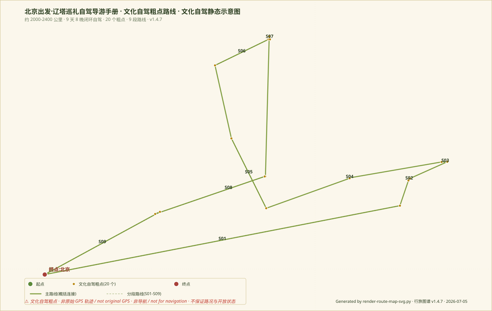

从辽西走廊到契丹草原腹地
一条关于佛塔、捺钵与辽代都城的自驾路线
北京 → 锦州 → 义县 → 北镇 → 朝阳 → 赤峰 → 巴林左旗 → 宁城/承德 → 北京
从华北平原进入辽西走廊，穿越草原边际，最终完成辽代五京的巡礼闭环
* 开放时间、门票信息以景区官方公告为准，出行前请核对
* 奉国寺约 50 元，万佛堂约 30 元。出行前请核对官方公告。
* 北镇庙约 30 元，崇兴寺双塔免费（户外）。出行前请核对。
* 朝阳北塔户外免费，北塔博物馆凭身份证免费。周一闭馆。
* 朝阳博物馆凭身份证免费。周一闭馆。出行前请核对。
* 庆州白塔约 30 元，庆州古城免费（户外）。巴林左旗住宿条件一般，建议提前预订。
* 辽上京遗址户外免费，真寂之寺约 30 元，博物馆凭身份证免费。周一闭馆。
* 赤峰辽文化博物馆凭身份证免费。周一闭馆。出行前请核对。
* 大明塔户外免费。建议早出发，避开周日返程高峰。
点击 Day 按钮或主题按钮查看不同视图
点击关系项跳转到对应景点卡片
五幕叙事，理解这条路线背后的历史脉络
先看这个 · 7 个核心景点的文物图录式档案 · 每个卡片含导游词摘句
关于奉国寺，我想讲三个层次。
第一个层次是建筑。辽代是契丹族建立的政权，但契丹族在建筑上并没有完全固守本民族传统，而是大量吸收了唐、宋的汉族建筑技术，又保留了自己的特色。大雄殿的单檐庑殿顶是汉族建筑的最高等级，但它的斗拱形制和梁架结构又带有明显的辽代特征——雄健、粗犷、不拘小节。这让我想到契丹这个民族本身——他们有草原民族的豪放，也有吸收先进文明的智慧。
第二个层次是空间。进入大雄殿，你会有一种奇异的感觉——这座建筑明明是木构，但给你的压迫感不亚于石头建筑。55米的面阔，在中国现存木构建筑中排名第三。但前两位都是清朝建筑，而大雄殿是1000年前的辽代遗物。站在殿内，仰望那七尊8米高的佛像，你会理解为什么古人说"山阴道士如相见，应写黄庭换白鹅"——有时候，震撼不需要文字。
第三个层次是历史。奉国寺建于1020年，这时北宋还在，澶渊之盟刚刚签订十几年，辽宋关系相对和平。义县当时叫宜州，是辽国对抗北宋的边疆重镇。但就是在这种"前线"位置，辽国皇帝花了巨资建造了这样一座家庙。为什么？我想，除了信仰之外，更重要的是一种文化宣示——契丹不只是会骑马打仗的蛮族，他们也有能力建设和守护这样精美的佛教文明。
走出大雄殿，回头再看一眼这座建筑。它在这片土地上屹立了千年，经历了战乱、火灾、地震、文革，却奇迹般地保留了主体结构。1988年，奉国寺大雄殿被列入第三批全国重点文物保护单位。
这座寺庙的存在本身，就是对"蛮族"偏见的最有力反驳。
讲万佛堂石窟，我想从一个地理问题开始：为什么在远离中原的东北边疆，会出现这样一座石窟？
答案要从交通说起。大凌河古称白狼河，是东北地区最重要的河流之一。从华北平原出发，沿大凌河谷地北上，可以直达辽西走廊，进而通往整个东北。万佛堂石窟就开凿在这条古道旁边。
公元477年，北魏孝文帝刚刚开始推行汉化改革。那时候的北魏已经控制了华北平原，但东北边疆的控制还不稳固。开设石窟的初衷，一方面是宣传佛教信仰，另一方面也是一种文化宣示——我来了，我在这里留下了文明的痕迹。
但石窟的营建不是一蹴而就的。从北魏到东魏、西魏、北齐、隋、唐、辽，每个朝代都在这里留下了自己的印记。你现在看到的万佛堂，是一千多年间无数工匠、僧侣和信徒共同创作的结果。
站在石窟前，回望山脚下的大凌河谷。古人从这里经过，抬头望见半山腰的石窟，心中会涌起怎样的感受？千年过去了，河流依旧，石窟依旧，但那些创造者的面孔早已消失在历史中。
唯一留下的，是这些石头上的雕刻，以及我们今天的凝视。
关于朝阳北塔，我最想讲的是它的"五世同堂"。
第一世是北魏时期。当时这里是思燕佛图——一座木构楼阁式塔，建于公元486年至490年之间。后来木塔被火焚毁。
第二世是隋代。隋文帝杨坚崇信佛法，下诏在全国各州建塔供奉舍利。公元601年，隋朝在思燕佛图遗址上建起了梵幢寺塔。
第三世是唐代。唐朝在隋塔的基础上进行了大规模重建，形成了三塔并立的格局。
第四世是辽代。辽代是朝阳北塔的黄金时期。公元908年，辽国在唐塔遗址上建起了延昌寺塔，这就是今天我们看到的北塔的主体。
第五世是明代。明代正统年间，辽东发生大地震，延昌寺塔严重受损。明代工匠在辽塔的基础上进行了大规模修复，形成了今天我们看到的面貌。
为什么朝阳北塔如此重要？因为它是东北地区佛教传播的实物见证。从北魏到明代，一千多年的时间，无数信徒和工匠在这片土地上留下了自己的痕迹。而这座塔，就是所有这些痕迹的叠加。
离开之前，再回头看一眼这座塔。它的每一块砖、每一幅雕刻，都承载着不同时代人们的信仰和愿望。今天我们看到的，是五个朝代的工匠接力创作的结果。
这本身就是一种奇迹。
庆州白塔是辽代佛塔建筑的巅峰之作，不接受反驳。
为什么这么说？因为这座塔集中了辽代建筑和雕刻的所有精华。首先，从建筑形制上说，这是一座八角七层密檐式塔，结构合理，比例匀称，是辽代工匠对塔建筑形制的完美诠释。
其次，从雕刻艺术上说，庆州白塔的浮雕是辽代雕刻的最高水平。塔身各面雕有数百尊佛教造像，每一尊都栩栩如生。工匠采用了高浮雕和浅浮雕相结合的手法，使造像呈现出强烈的立体感。
第三，从历史意义上说，庆州白塔是庆州城的标志性建筑。辽代皇帝有"春水秋山"的传统，秋天去西部的庆州一带狩猎。庆州就是秋捺钵的重要补给城市。这座白塔，就是辽代皇帝为了祈求佛祖保佑秋捺钵旅途平安而建的。
站在白塔下，抬头仰望。这座塔在草原上矗立了近千年。它见证过辽国的强盛，也见证过它的灭亡；它见证过蒙古铁骑的践踏，也见证过清代旅蒙商人的祈祷。今天，它仍然洁白如初，像一个不会老去的传说。
庆州白塔不只是一座建筑，它是辽代国家意志、宗教信仰和建筑艺术的最高结晶。
讲辽上京，我想从一个问题开始：为什么契丹族要在草原上建都？
答案在于辽国的特殊国情。辽国不是一个纯粹的游牧国家，也不是一个纯粹的农耕国家，而是一个同时包含游牧和农耕两大区域的二元帝国。如何管理这样一个国家？辽国的开创者耶律阿保机想出了一个绝妙的主意——"以国制治契丹，以汉制待汉人"。具体到都城设计上，就是建造一座同时容纳两种文化的城市。
于是，辽上京出现了。北城是皇城，用契丹的方式建造和管理；南城是汉城，用汉族的城市规划建造，是汉族官员和百姓居住的地方，也是商业活动的中心。
这种设计在当时的世界上是独一无二的。后来，元朝的大都、清朝的北京，都能看到这种多民族共居都城的影子，但它们的原型，可以追溯到辽上京。
站在皇城遗址上，放眼望去。千年前，这里曾经是整个草原帝国的中心。契丹皇帝从这里发布命令，管理着一个西至阿尔泰山、东至日本海的庞大帝国。今天，帝国早已消亡，但城市的骨架仍然存在，像一个沉默的见证者。
辽上京不只是一座遗址，它是理解契丹文明和草原帝国的钥匙。
在赤峰辽文化博物馆，我想引导大家思考一个问题：如何理解辽代文明？
这几天我们看了很多辽塔，奉国寺、万佛堂、朝阳北塔、庆州白塔、辽上京遗址。这些景点给我们一个共同的印象：辽代是一个高度发达的文明。但具体发达在哪里？博物馆的展品给出了答案。
首先，辽代有发达的手工业。馆藏的金银器工艺精湛，有些器物的制作技术即使在今天看来也是先进的。
其次，辽代有独特的文化融合。馆藏文物中可以看到契丹族、汉族、波斯等多种文化元素的融合，形成了一种新的文化形态。
第三，辽代有丰富的精神世界。墓室壁画和随葬品反映了契丹人对死后世界的想象。
最后，辽代有开放的国际视野。辽代与北宋、西域、中亚都有频繁的贸易往来和文化交流。
参观完博物馆，你对这次辽塔之行应该有了更深的理解。那些塔不只是建筑，它们是契丹文明留给我们的纪念碑。而博物馆里的文物，是这些纪念碑的说明书。
博物馆是旅行的终点，也是新旅程的起点。
大明塔是辽中京的标志，而中京是辽代五京中最有"野心"的一座。
辽代有五座京城：上京是首都，是契丹族的政治中心；中京是后来建设的陪都；东京是辽东地区的中心；南京（今北京）是华北地区的门户；西京是对抗北宋的军事重镇。
中京建于什么时候？公元1004年，辽圣宗耶律隆绪在位期间。澶渊之盟签订后，宋辽关系进入和平时期，辽圣宗开始考虑在南境建设一座新的京城，作为接待宋朝使者和发展贸易的中心。
中京的命运和辽国一样，从辉煌走向衰落。1122年，金兵攻克中京，辽国皇帝逃往西京。两年后，辽国灭亡。中京从此走向衰落，金代以后逐渐荒废，最终只剩下大明塔等少数建筑遗存。
站在大明塔下，这是整个行程的最后一站。从北京出发，经过9天8晚，我们看完了辽代的主要佛塔和都城遗址。现在，这座80米的高塔是这段旅程的终点。
大明塔不只是一座塔，它是辽代五京制度的最后一个见证者。
简短讲解：北镇庙是五镇信仰的物质遗存。古代中国有"五镇"之说，指五座最重要的山岳：东镇沂山、西镇吴山、南镇会稽山、北镇医巫闾山、中镇霍山。帝王们定期祭祀这些神山，以求国泰民安。北镇庙就是祭祀北镇医巫闾山的场所。虽然现存的建筑多为明清遗物，但它是这一古老信仰传统的唯一见证。
简短讲解：崇兴寺双塔是辽代双塔布局的典型实例。两塔东西对峙，相距约50米，这种布局在辽塔中较为罕见。双塔形制相同，均为八角十三层密檐式实心砖塔，高约43米。崇兴寺早已无存，只有双塔留存至今，成为北镇城的标志性景观。
简短讲解：朝阳南塔和北塔是两座并立的城市塔，它们相距约1公里，在古代共同构成了兴中府的城市天际线。如果从高处俯瞰，两塔遥相呼应的场面一定很壮观。南塔的规模比北塔小，但形制相似，都是辽代密檐式塔的标准样式。
简短讲解：班吉塔是一座小型辽塔，高约20米，只有庆州白塔的四分之一左右。但它的价值在于小巧精致、保存完好。班吉塔的形制与庆州白塔类似，是辽代密檐式塔的标准样式，只是规模较小。这提醒我们：辽代的塔建筑不是只有大型的，也有许多中小型的塔，散布在各地。
简短讲解：庆州古城是辽代典型的捺钵城市。所谓捺钵，是契丹族的生活传统——皇帝和贵族随着季节变化，在不同地点之间迁徙办公。庆州城就是秋捺钵的重要据点。辽代皇帝秋天来这里狩猎、接收贡赋、处理政务。古城的规模不大，但功能齐全，是草原城市的特点。
像旅行长卷中的章节页，每个城市都有自己的故事
锦州是辽西走廊的入口城市，也是进入东北地区的门户。自古以来，锦州就是华北与东北之间的交通要道，兵家必争之地。锦州最著名的美食是锦州烧烤，被誉为"东北烧烤之都"。此外，沟帮子熏鸡也是锦州地区的特产。
义县是辽西地区重要的佛教文化中心。这里保存有奉国寺和万佛堂石窟两处重要的辽代佛教遗存。义县古称宜州，是辽代对抗北宋的边疆重镇，同时也是佛教传播的重要节点。
北镇是医巫闾山脚下的历史文化名城。北镇古称广宁，是辽代五京之一——中京的所在地（后迁至今宁城）。北镇地区是辽代皇室活动的核心区域之一，留下了北镇庙、崇兴寺双塔等重要遗存。
朝阳古称龙城，是东北地区最重要的历史文化名城之一。朝阳曾是三燕古都（鲜卑族建立的地方政权），也是辽代的兴中府所在地。朝阳地区佛教遗存丰富，保存有朝阳北塔、朝阳南塔、北塔博物馆等重要景点。
赤峰是红山文化的故乡，也是契丹草原文明的核心区域。赤峰古称松州，是辽代重要的捺钵地和军事重镇。赤峰博物馆和赤峰辽文化博物馆系统展示了红山文化、契丹族源和辽代文明。
巴林左旗是辽上京所在地，契丹族的龙兴之地。巴林左旗所在地古称临潢，是辽国的第一座首都。辽上京遗址和辽上京博物馆是了解契丹文明的核心景点。庆州白塔是辽代佛塔艺术的巅峰之作。
宁城和承德是从辽上京返回北京路上的重要节点。宁城曾是辽中京所在地（后迁至宁城），大明塔是辽中京的城市标志。承德则是清代皇室避暑山庄所在地，拥有丰富的清代文化遗产。
出发前每天完成一项，建立对辽代的完整认知
v1.5.1 新增 · 由 routes-manifest.json 驱动 · 状态徽章 · 摘要 · 下载 · 相关路线推荐
v1.4.7 新增 · 文化自驾粗点数据 · CSV / GeoJSON / GPX 下载 + 静态 SVG 预览
本路线已提供文化自驾粗点数据，可下载 CSV / GeoJSON / GPX，并查看静态 SVG 预览。 数据用于研究、写作和行程规划，不是实时导航，不保证路况和开放状态。
详细数据资产与规范见：data/routes/README.md · 路线数据索引 · ROUTE_DATA_SPEC

系统介绍契丹族起源、建立辽国、与北宋的关系，以及辽代的社会制度和文化成就。是了解辽代历史的最佳入门视频。
央视《探索·发现》节目对辽上京遗址的考古发现进行了详细记录，可以帮助你了解最新的考古成果。
《古塔往事》系列节目讲述了中国各地古塔的故事，其中包含对庆州白塔的详细介绍，有助于理解辽塔的建筑特色。
元朝官方编纂的辽代正史，记载了辽国从建立到灭亡的完整历史。建议阅读本纪部分和营卫志、百官志等章节。
南宋学者叶隆礼编撰的辽国史书，记载了辽国的地理、政治、文化等情况。可与《辽史》对照阅读。
张国维教授的辽金元史通识读物，语言通俗，内容权威，适合建立对辽代历史的整体认识。
中国建筑史学的经典著作，对辽代建筑进行了系统研究。第三卷专门讨论宋辽金西夏建筑，是理解辽塔建筑技术的专业读物。
数据保存在本地浏览器中，不会同步到云端
理解每一站和前后站的关系，能让你的旅程更连贯
本行程的 14 个重点景点都有自己的"上一站 / 下一站"关系。例如：
具体关系显示在每个景点的卡片中。打开任意景点卡片，点击"展开全部内容"即可看到完整的"它和上一站 / 下一站的关系"说明。
保留 9 天主路线，但每日加入「驾驶强度 / 参观强度 / 备选删减」，方便你按状态调整。驾驶强度仅写“短 / 中 / 长”，不提供实时路况。
| Day | 过夜地 | 主要路段 | 核心景点 | 驾驶 | 参观 | 当日重点 | 备选删减 |
|---|---|---|---|---|---|---|---|
| D1 | 锦州 | 北京 → 锦州 | 广济寺塔（古塔公园） | 中 | 轻 | 调整状态、熟悉路况 | 广济寺塔 |
| D2 | 义县 | 锦州 → 义县 | 奉国寺 + 万佛堂石窟 | 短 | 重 | 奉国寺是辽代主轴核心 | 万佛堂 |
| D3 | 北镇 | 义县 → 北镇 | 北镇庙、医巫闾山 | 短 | 中 | 可拓展为半天上山 | 上间山 |
| D4 | 朝阳 | 北镇 → 朝阳 | 朝阳北塔 + 北塔博物馆 | 中 | 中 | 博物馆+塔一上午 | 南塔 |
| D5 | 赤峰 | 朝阳 → 赤峰 | 赤峰博物馆、辽文化博物馆 | 中 | 中 | 博物馆型旅行者可拉长 | 红山文化馆 |
| D6 | 巴林左旗 | 赤峰 → 巴林左旗 | 庆州白塔、辽上京遗址 | 中 | 重 | 辽代主轴最重一天 | 辽祖陵 |
| D7 | 宁城 | 巴林左旗 → 宁城 | 大明塔、辽中京遗址 | 长 | 中 | 五京体系总结日 | 辽中京周边 |
| D8 | 承德 | 宁城 → 承德 | 避暑山庄、外八庙 | 长 | 中 | 收束日，依状态拉长 | 须弥福寿之庙 |
| D9 | 北京 | 承德 → 北京 | 返程 | 中 | 轻 | 预留堵车与休整 | 承德博物馆 |
主轴核心：奉国寺、朝阳北塔、庆州白塔、辽上京、大明塔。这五点是辽代 9 天的灵魂，其余都为伸缩点。
出发前阅读一遍。今天先看主轴五点，其它都是会看到时再说。
| Day | 今日导游词 | 建议停留 | 拍摄点 | 读图顺序 | 今日不要硬加点 |
|---|---|---|---|---|---|
| Day 1 | 北京 → 锦州。从华北进入辽西走廊。今天是过渡日，路上不赶点。到锦州后可以以广济寺塔作为热身。 | 1h 广济寺塔 | 古塔公园远景 | 位置 → 轮廓 → 塔身 | 不要上高速后赶夜路 |
| Day 2 | 义县：奉国寺与万佛堂石窟。奉国寺是辽代主轴第一天。请留出足够时间。 | 2–3h 奉国寺 | 奉国寺大殿内颀下、佛像衣纹 | 广度 → 佛像 → 建筑 → 彩画 | 不要赶在中午拍照（光线太硬） |
| Day 3 | 北镇：山岳信仰与边地秩序。北镇庙与医巫闾山是今天的主线。 | 半天 北镇庙 | 医巫闾山远景、北镇庙门额 | 上庙 → 看山 → 下庙 | 不要在冬天下医巫闾山 |
| Day 4 | 朝阳：辽塔城市天际线。北塔是朝阳城市天际线的象征。 | 2–3h 北塔 + 博物馆 | 北塔、黄昏下的南塔 | 塔 → 博物馆 → 博物馆后看南塔 | 不要加凤凰山 |
| Day 5 | 朝阳 → 赤峰：从辽西进入草原腹地。今天是跨城日。赤峰博物馆是今日重头。 | 2–3h 博物馆 | 红山文化玉龙、赤峰城区远景 | 序厅 → 主馆 → 辽金馆 | 不要跨城日加路途点 |
| Day 6 | 庆州白塔：草原上的佛塔高点。庆州白塔是 9 天灵魂点。 | 2–3h 庆州白塔 | 白塔近照、草原远景 | 远看 → 逆光 → 逐层 | 不要加辽祖陵（需半天） |
| Day 7 | 辽上京：契丹龙兴之地。今天看契丹都城遗址。 | 半天 辽上京 | 辽上京南塔、博物馆 | 都城轮廓 → 宫城 → 佛寺 | 不要在赤峰加博物馆 |
| Day 8 | 辽中京 / 大明塔 / 承德：都城制度与收束。今天是主轴的最后一站。 | 2–3h 大明塔 | 大明塔 80m 高塔、晚周光下 | 中京 → 塔 → 大明塔 | 不要在宁城返夜路承德 |
| Day 9 | 承德 → 北京：从边疆秩序回到帝都。今天是返程日。 | 1h 避暑山庄 | 避暑山庄本中山区 | 山区 → 平原区 → 宫殿区 | 不要在返程中加寺庙 |
只写区间。不写门票与实时开放时间。
| 地点 | 建议停留 | 为什么需要这个时间 | 可压缩方式 | 不建议压缩 |
|---|---|---|---|---|
| 奉国寺 | 2–3h | 主轴五点之一，不宜看一半 | 只看主殿不细看装拄 | 不可以低于 90 分钟 |
| 万佛堂石窟 | 1h | 两窟为主，多为拓片 | 只看东窟 | 不可以不看东窟 |
| 朝阳北塔 + 北塔博物馆 | 2–3h | 塔+博物馆不可拆 | 看塔顶不可上 | 不可以只看塔不看博物馆 |
| 庆州白塔 | 1–2h | 草原上草原上远看 30 分钟、进塔 30 分钟 | 不进塔 | 不可以不去 |
| 辽上京遗址 + 博物馆 | 半天 | 都城 + 博物馆联合 | 只看博物馆 | 不可以只看遗址不看博物馆 |
| 大明塔 | 1h | 80m 高的辽代高塔 | 不进塔 | 不可以不到 |
| 北镇庙 | 1–2h | 山岳信仰与上庙路径 | 只看上庙 | 不可以不走上庙 |
| 牛河梁国家考古遗址公园 | 半天 | 5 千年玉龙与女神庙 | 只看玉龙馆 | 不可以赶在下午到（光线差） |
| 赤峰辽文化博物馆 | 1–2h | 契丹叙事 + 辽金文物 | 只看辽金馆 | 不可以不到 |
| 承德避暑山庄 | 半天 | 山区 / 平原区 / 宫殿区 | 只看山区 | 不可以只走宫殿区 |
不要一到塔前就拍全景。先绕一圈，再决定从哪里拍。
现场先观察，后拍照。不同光线下拍出不同的塔。
适合时间少的人。会牺牲北镇、牛河梁和部分博物馆与部分博物馆型深度。5 天不能贪多。
入夜锦州酒店。广济寺塔不限时间则可看 30 分钟，否则跳过。
奉国寺（必看 2–3 小时） + 万佛堂石窟（1 小时）。夜宿义县。
朝阳北塔 + 北塔博物馆（上午）、朝阳博物馆（下午可选）。夜宿朝阳。
乘高铁到赤峰后包车去庆州白塔 + 辽上京。夜宿巴林左旗或返赤峰。
辽上京深度 + 赤峰返程；或大明塔看后直接返京。不能两头都看。
如果只看一条主线：选「佛塔与辽代都城」— 奉国寺、庆州白塔、大明塔、辽上京。这四点可串起辽代的关键点。
适合古建 / 博物馆 / 辽史深度爱好者。增加多点停留、博物馆型深度、降低驾驶压力。
广济寺塔、奉国寺、万佛堂石窟。北镇庙插上间山。驾驶轻，参观重。
医巫闾山充分停留。牛河梁国家考古遗址公园需一整天。红山文化主题。
朝阳北塔、北塔博物馆、朝阳博物馆、南塔、凤凰山。可插牛河梁返程点。
赤峰博物馆、辽文化博物馆、庆州白塔、辽上京、辽祖陵。
大明塔、辽中京、避暑山庄、外八庙、承德博物馆。
预留休整与博物馆半天。
适合：古建 / 博物馆 / 辽史深度爱好者，想降低每日驾驶压力的人。
根据时间预算选择适合你的预习方案
点击节点展开详情
辽代是中国历史上第一个"多都城"制度。⭐ 标记为本行程涉及
理解辽塔的6种形制，才能看懂本行程中的每一座塔
点击词条展开详情。理解这11个核心概念，才能理解整条辽塔巡礼线
事实核对标签：点击勾选每项（出发前需核对），状态保存在本地浏览器（localStorage），换设备不继承
按资料类型分组，每条资料含可信度标签（官方确认 / 较可靠 / 旅行整理）